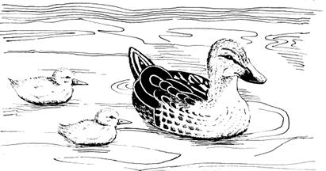
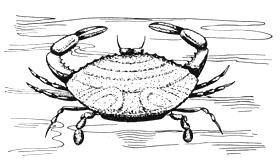
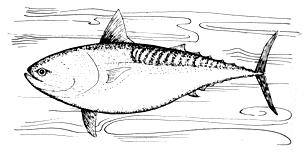

In the late fall of 1970, Bruce McDuffie-a chemistry professor at the State Universityof New York at Binghamton threw a large flap into the fishing industry with his discovery of .75 parts per million of mercury in cansof tuna taken from supermarket shelves. This level of mercury-an element that can cause blindness, crippling and death when eaten ill minute quantities -exceeds, by 50%, the limits supposedly allowed by the Food and Drug Administration and- quite naturally-made headlines all over the world.
Professor McDuffie's announcement, shortly thereafter, of finding even higher concentrationsof mercury in swordfish rattled the FDA, the public and the fishing fleet even further and the two reports-confirmed by the FDA-caused the withdrawal of hundreds ofthousands of dollars of tuna and swordfish from the market.
High levels of mercury have since been found in many other seafoods-both fresh and salt water-and the problem promises to be with us for years. Hal Smith recently asked Professor McDuffie to comment on his findings, the dangers of eating tuna and the future of the fishing industry.
PLOWBOY: Why is mercury pollution dangerous?
MCDUFFIE: Mercury is a toxic element not known to be necessary for life. In fact, it can be lethal. Mercury has long been used in scientific experiments to kill bacteria, interfere with certain types of enzymes and that sort of thing. It can be a very toxic substance in the body.
PLOWBOY: Short of causing death, what damage can it do?
MCDUFFIE: Well that depends on the type of mercury. There are several different forms of mercury in the environment. One is the element itself: the vapor from the metal. This vapor can be inhaled and absorbed and then it does about the same as inorganic mercury, mercury salts.
There are also organic forms of the element. One type that has been used a lot as a fungicide is phenyl mercury. The body absorbs this organic form of mercury pretty completely . . . but once in the body it acts more like inorganic mercury methylmercury-the most dangerous form.
Methylmercury is formed in lake bottoms and has been used to treat seeds. Once it gets into food, this substance is almost completely absorbed by the body. Once absorbed, methylmercury has the ability to penetrate the central nervous system, the brain. It tends to be more concentrated in the brain than other parts of the body and it tends to do irreversible damage. So the most dangerous form of mercury pollution for man is methylmercury.
Unfortunately, inorganic mercury may be changing to methylmercury in the aquatic environment. Certainly the mercury in tuna and swordfish is predominantly - if not 100% - methylmercury so we are dealing, in the food we eat, with the most hazardous form.
PLOWBOY: Your discovery seemed to surprise many oceanographers, chemists and ecologists. Why?
MCDUFFIE: It's hard to realize now how hung-up we were on the notion that only the fresh waters had a mercury problem. I am a relative newcomer to the problem myself and it wasn't until last spring - when high concentrations of mercury were discovered in the Great Lakes fish and in the St. Clair River near Detroit - that I realized how much harm mercury was doing to some of the country's lakes and rivers: Then people began finding fish with more than .5 parts per million (ppm) in rivers and lakes around the country . . . from Maine to Alabama. And so we all sort of had the notion that it would be a problem caused by acute pollution in a small ecosystem like a river or a lake.
To then discover these relatively high concentrations of mercury in ocean fish . . . well, it surprised everybody because the first thought was, "My God, have we polluted the oceans?"
Well, we know that we have polluted the oceans because things like DDT - or its metabolic products - are man-made and do not exist in nature yet they are found in the middle of the ocean and pollute the birds and fish there. Now, the mercury in ocean fish may be largely from natural sources but we definitely have put mercury into the ocean and no one yet knows exactly to what extent we've changed the concentration there . . . but we have certainly added to whatever nature is putting in.
PLOWBOY:. You found that cat foods containing tuna were less contaminated than tuna sold for human consumption. Also some cheaper brands of regular tuna had higher concentrations. Why?
MCDUFFIE: It just happened that the first can I analyzed was the cheapest brand on the shelf in a chain store. It's probably been established - subsequently that high concentrations ... of mercury are found also in the more expensive brands. I don't think there's any correlation between price and mercury content.
As for the cat food, I did check some cat tuna - and the FDA also tested some - and we found around .2 ppm in it. I don't know why we didn't find up to .5 ppm in any unless the canners mix something with the tuna during processing. Or perhaps they use the smaller fish for cat food. If you go fishing, you take the big fish home and throw the little ones to the cat. Maybe the tuna processors follow that rule. I guess we're going to have to reverse the process, if that's the case, because we've found that the greatest concentrations mercury are in the largest fish.
PLOWBOY: The UN's Food and Agriculture Organization believes the oceans are man's last great reserve of high protein foods. If the world population of 3.6 billion doubles in the next 20 years - as some experts predict - will the oceans be able to feed us?
MCDUFFIE: I'm really not an expert on how much food we can get out of the oceans. But the annual catch for a lot of species has been going down. Whales are disappearing and I think the yellowfin tuna is beginning to lose out; I believe there was an attempt to put a quota on them. The fishing boats have to go farther out because they have cleaned off the Continental Shelf and when you go deep-sea fishing you're more apt to see stuff floating around or to catch a beer can than a fish.
I think probably the world can feed - at least for a while - twice as many people and I imagine we might have to try because, even though we're putting the brakes on population growth, it's likely that the population will double before the control measures can take effect. Yet, can the world sustain and feed - for long periods of time - a population that size . . . and take care of the waste generated by many people? I have grave doubts about it.
PLOWBOY: Is the pollution problem likely to increase in proportion to the population increase?
MCDUFFIE: Every human produces a certain amount of waste from his body. So that, of course, will rise in direct proportion to the number of people. But a large part of the wastes from our life style depends on what you might call the gross national product. A human being by himself doesn't make tremendous demands on natural resources . . . it's the energy we consume and all the things we buy and use that have to be mined or taken out of the earth. I'm quite sure the tendency has been for the total waste to increase much faster than the population; it may not be the square of the population rate but it's some exponentially increasing function.
PLOWBOY: What chain of events led you to test tuna - especially if ocean fish had been above suspicion?
MCDUFFIE: I'm an analytical chemist. I've been teaching and doing research in the field for 25 years and, increasingly, I've been thinking about what I - as a chemist - could do to help solve some of the ecology movement's analytical problems. I started work a couple of years ago on a method to determine sulfur dioxide and I now have a student engaged in that research project. Last spring I thought it would be a good idea if the county (Broome Co., New York, in which Harpur College is located-ED.) would put up a little money so I could hire some students and use the laboratories and equipment at the university to analyze samples of water and air from around the country.
This fall, in the course of those tests, I was rather surprised and horrified to find mercury in concentrations of half - or close to half - a part per million in some small fish from our own Chenango River. It was when I tested one of those fish - in late November - that a student helping me said, "The only fish I eat is tuna. Why don't you analyze some?" My wife had also suggested I check tuna. So we did.
On December 2, there it was: about .75 ppm in the first can I analyzed. The news about the Chenango and the Susquehanna rivers is bad for local fishermen, but the news about tuna fish is much more serious because tuna is such a large factor in the world's food supply.
PLOWBOY: There is apparently no mercury-dumping industry along the Chenango. Where, then, did it come from?
MCDUFFIE: Perhaps, at the moment, there's no industry dumping mercury in the Chenango River or in the Susquehanna but there are chemical plants and other industries up the Chenango and the Susquehanna that may have contributed some form of mercury pollution in the past. I know of one plant upstream, for instance, that used to make a mercury fungicide. We hope to get into the problem this summer by taking bottom samples both upstream and downstream.
PLOWBOY: Will that b e an expensive job?
MCDUFFIE: It could be pretty expensive. Whenever you set out to survey the environment you have to take a lot of samples to get a good fix on the problem and there's miles of stream. It's going to mean a lot of time taking samples and a lot of analysis.
PLOWBOY: Let's assume that you've pinpointed the source, to one industry or to several. That information would be pretty worthless, wouldn't it, unless you could persuade those industries to shut down find/or change their operations . . . or get the government to do it. Is such action likely?
MCDUFFIE: Yes, I think the discharge from many of these factories will be brought down to near zero pretty soon. But what can we do about the mercury that's already in the water? That may continue to release methylmercury in the years to come; this is what they're worried about in the Great Lakes.
PLOWBOY: You found mercury not only in tuna but in swordfish, which had very high concentrations. Twenty-three percent of the tuna and 89% of the swordfish tested by the Food and Drug Administration exceeded the FDA limit. What else have you tested and what are the results?
MCDUFFIE: The FDA in its first announcement said 23% of the tuna was over .5 ppm. Later when they analyzed more, they said that only 3.6% tested high. They tell me that the first analyses were biased. Now they think they see a picture.
There are four or five varieties of tuna caught and canned. Skipjack tuna runs around 10 pounds and is apt to contain .1 to .2 ppm of mercury. The same for the smaller albacore caught off the coast of this continent. The larger albacore of 40 to 60 pounds, and some of the other medium tuna, analyze maybe .2 to .5 ppm. Finally, the larger varieties of tuna - the yellowfin (80 pounds) and the bigeye and bluefin (which may run 100 pounds) - are apt to test over .5 ppm. The smaller varieties, in other words, contain lower concentrations of mercury.
Now I'm really surprised that, of all the tuna caught, only 3.6% test over .5 ppm of mercury. That means my first analysis was a 30-to-1 shot. I believe that the 3.6% refers to the number of lots they tested and perhaps not to 3.6% of the total weight involved; it may be that they grouped some lots together.
The swordfish is a large fish, as large as a big tuna. Usually they don't take it for steaks unless it's 100 to 200 pounds and so it runs up to about 1-or even 2-ppm.
In Canada, at the Ottawa conference on pollution, I heard that halibut - large halibut - may be a problem. The halibut is a large, flat fish like flounder . . . only bigger. It's somewhat of a bottom feeder but I guess, when it gets bigger, it eats herring and other fish and the concentrations of mercury in halibut do build up - apparently - to over .5 ppm. So we have to watch large halibut, large tuna and swordfish. I tested one halibut steak; it came out .22 ppm.
I tested a lot of other fish too. In fact the first thing I did after analyzing tuna was to buy a couple of fish sandwiches and test them. They turned out to be .1 ppm or less, so I was relieved. Fish sandwiches are usually cod filet.
I tested fried haddock (.02), frozen flounder filet from Canada (.02), frozen cod filet from Canada (.02), and small canned mackerel from Japan (.05). A can of icy point Alaska pink salmon (.15) was somewhat high., Sardines from Canada and Norway came out less than .1. It seems to be only the tuna, swordfish, halibut and, possibly, some salmon that we must keep an eye on. I think the FDA's tested quite a few brands of salmon but none analyzed as high in mercury as the one I found.
PLOWBOY: Are dangerous levels of mercury turning up in other foods?
MCDUFFIE: So far the methylmercury problem seems to be restricted mainly to fish and the birds that eat them. Concentrations of mercury in herbivores like deer and cattle are only a few hundredths of a part per million, and even this may not be methylmercury. So, no, we don't seem to have a general problem of mercury poisoning in foods yet . . . though we do have to watch for it.
PLOWBOY: I read that you found mercury in brown rice. Some people, of course, have a very heavy diet of brown rice. Are they in danger?
MCDUFFIE: Well, if it's methylmercury, maybe. I found .05 ppm in some brown rice. Now actually what I weighed was the dry and not the wet (cooked) rice. If you measured out a quarter pound of the dried rice - about 100 grams - you'd get 5 micrograms of mercury. I don't know how much the rice eaters consume daily - would they eat half a pound a day? When you cook it, that's quite a bit - but I don't think they're getting a dangerous amount of mercury from their brown rice. These things, however, should be tested by the FDA.
PLOWBOY: Do you believe the contamination you discovered is more likely to be natural or man-made? If the latter, does this mean a consumer-oriented, industrialized society must necessarily suffer the effects of mercury pollution? Can anything be done?
MCDUFFIE: If the contamination is from man-made pollution I think it's going to get worse before it gets better. Our chickens are coming home to roost. But the ocean - if you take all the oceans together - is a huge, huge body of water. That volume of water multiplied by the average concentration of mercury in the ocean today (around .1 parts per billion) gives a total of quite a few millions of pounds of mercury. All of the mercury production to date in the world could not have contaminated the total ocean to this extent. There are, however, two major ways that man may have contributed to this pollution.
First, the rivers and estuaries along the coast of Japan the U.S. or Europe, due to industrial discharges, could have abnormally high concentrations of mercury. As a result, the organisms growing there - phytoplankton, zooplankton, crustaceans and shrimp - would probably also contain abnormal amounts of mercury. The little fish feed on the smaller organisms and the bigger fish feed on the little fish. If these polluted areas of the world produce a significant fraction of the tuna's ultimate food - say the mackerel come in near shore to feed and they go out into the ocean where the tuna eat them - why, this is a way the man-made pollution could be a major cause of the mercury in tuna.
The second large man-caused factor in this pollution might be airborne mercury, which comes from power plants, incinerators and car exhausts. The burning of fossil fue - coal and oil - or the burning of paper, which has mercury attached to it during processing, releases the element.
Now this airborne mercury probably has an average residence time in the atmosphere of several years . . . which means that it must be widely distributed in the industrialized belt of the northern hemisphere and that it eventually falls into the ocean with rain. Thus, the surface waters of the ocean could be receiving continually somewhat higher concentrations of mercury than is naturally present. If this "fallout" mercury stays in the surface waters for more than a few years, it could be contributing measurably to a buildup there.
I don't know enough about the ocean, at this point. to say that this is or is not happening. Most people believe that a metal like mercury won't stay in the surface layers of water very long but, instead, will be absorbed by plankton which die and settle to the bottom. I don't know yet. But the top 100 meters of the ocean is a small fraction of the total. If we're talking about contamination of only this layer . . . yes, there has been enough mercury discharge in the world by man to pollute the surface waters.
PLOWBOY: What do you think can be done about it?
MCDUFFIE: Well, there's already a large-scale effort underway to monitor the world's oceans to establish the concentrations of various molecules and elements such as mercury, lead, cadmium, DDT products, polychlorobiphenyls, etc. These things should be monitored carefully and continually at about 1,000 stations that compare the pollutants' surface concentrations to their concentrations in the lower depths of the world's oceans. This should give us a definite idea as to whether this is a natural or manmade problem. By studying the mercury distribution in the ocean, we could discover whether it's coming from the shores or whether it's more on the surface than in the deeper layers. Concentrations in the ocean are high enough now that we should do all we can not to make it any higher.
Let me give you some figures on the discharge of mercury in the world: world mercury production is in the neighborhood of 10,000 tons per year, about half of which goes into the world's oceans. It's been estimated by Goldberg of the Scripps Institution, that the world's oceans receive 10,000 tons of mercury a year . . . half of which is natural (from the weathering of rocks) and half - that 5,000 tons I just mentioned - from man. Now that means that man is doubling the mercury that's going into the ocean. Well, we should cut out our part and not contribute to this buildup at all.
I don't think these figures include airborne mercury from the combustion of fossil fuels, either . . . and that could be adding quite a few thousand tons to the 5,000 tons of man-made discharge. So you see in recent years man has been doubling, tripling or quadrupling the natural discharge of mercury. If you consider that most of this takes place in the industrialized areas of the northern hemisphere, we have surely been increasing the concentrations by a factor of 10 in certain areas.
I believe it would be very interesting to compare the oceans of the northern with those of the southern hemisphere. It takes years for the oceans to mix and - if man-made pollution is the cause of the mercury buildup - I think we'd find a difference. At any rate, there's probably enough mercury already in the deep ocean to cause concentrations up to .5 ppm in tuna and swordfish. These predator fish near the top of the food chain, particularly when they get big, will concentrate mercury from water by a factor of several thousand. So you go from parts per billion in the water to parts per million in the fish . . . and that, of course, is exactly what we've found.
PLOWBOY: Nearly two weeks after you announced your findings, the FDA said it would withdraw and test - within 30 days - almost one million cans of tuna from stores across the nation. Do you think the FDA should have acted faster?
MCDUFFIE: Well the FDA got right on the problem and started analyzing lots of cans as soon as I made the announcement. When they first stated that 23% of the tuna they'd probably analyzed 4 million cans and thought they should pull all the tuna off the shelves until a particular lot number had been tested and found safe. I figured a consumer with odds of 1 to 4 wouldn't want to buy any tuna. But the FDA continued to test all the lots and to take off the shelves only the ones that they analyzed as unsafe. The final figures of 3.6% make it seem that their method was OK... not very many people got tuna with high levels of mercury.
Now - two months later - the FDA has finished all the testing and, presumably, the consumer is assured of buying only tuna with less than .5 ppm of mercury . . . but I still think it would have been better to do it another way. I think the FDA should label the cans with the actual mercury content of each lot. This wouldn't cost much because there are thousands of cans in a lot and an analysis costs only $5 or $10. It would cost less than a penny a can to put the average lot analysis of mercury - or anything else - on the cans.
This analysis should-be put on each container, I feel, because tuna is convenient and relatively inexpensive and many people depend on it for their diet. It's also a low fat, low cholesterol food that is needed by a great number of heart patients. Since tuna is such an important food and since people's dietary habits vary so tremendously, we should know - individually - exactly how much mercury we're getting when we eat this fish. Somebody who eats tuna once or twice a week needn't be too concerned with a lot that contained .45 or .5 ppm of mercury . . . but a person who eats a can of tuna a day should guard against building a body burden of the element by picking a lot with .15 ppm or less of mercury.
PLOWBOY: FDA officials told one reporter - about a week after your discovery - that they were afraid removal of canned tuna from stores would create another "cranberry crisis." (In 1959 the cranberry industry was devastated when some cranberries were found tainted by a pesticide.-ED. ) Do you think perhaps the FDA - and the government generally - has been overly concerned about damaging industry? I'm thinking of not only sellers of tainted products, but of polluters as well.
MCDUFFIE: They certainly have that reputation. I think that they are very sensitive to the problems of the industry but perhaps by law they have to be more cautious than an independent investigator. For example, I analyzed one can and announced the brand name. I don't think the FDA would announce a brand name and say it was high in mercury unless the agency had tested all the brands on the market. They'd be reluctant to point the finger at one and not the others.
But the tuna situation is really not comparable to the cranberry scare. There's no comparison. The cranberry incident involved minor trace residues of a pesticide which, in extremely large amounts, had caused - or might cause - some cancer in rats. But, with mercury, we're talking about something that in somewhat greater concentrations has already killed people. Mercury is a known toxic substance. The concentrations involved are safe by a factor of only 10 or 20 compared to the levels that just recently killed people in Japan. So this is definitely not like the cranberry scare.
PLOWBOY: Swedish scientists say they must take economic and social factors into consideration when setting permissible levels of mercury contamination. They allow 1 ppm - twice as much as the FDA does - because they say a stricter standard would end all coastal and lake fishing in Sweden. You've cost the tuna industry an estimated $84 million; apparently you have a different perspective.
MCDUFFIE: Well in Sweden they not only have the 1 ppm limit but they say people should eat fish at that level only once a week. So there's an additional restriction, whereas the approach of the U.S. and Canada - of setting the tentative guideline of .5 ppm - is to avoid a restriction on how often fish can be eaten. No one yet knows precisely what the safe level is. In fact research on rats has not yet determined any "no-effect" level for mercury. The smallest concentrations have had an effect on the health and reproductive capacities of the rats.
It may turn out that .5 ppm is too high. What counts is the average daily intake and it may be that even a little bit of mercury hurts humans. Toxic symptoms were observed in one person in Japan who had a blood level of .2 ppm. Now the highest I found when I tested tuna - swordfish dieters in Binghamton was .05 ppm. Well that's one-fourth of what was observed to cause symptoms in a person! There's not a very large safety factor here.
PLOWBOY: The World Health Organization, recognizing that mercury occurs naturally in all foods, has unofficially said man's diet can safely contain mercury in concentrations of up to .05 ppm. But the FDA's guideline allows 10 times as much. The Canadians, whose standard we adopted, are now thinking about tightening theirs. Does the FDA standard need to be changed?
MCDUFFIE: I don't know. The most recent World Health committee to meet on the problem in June, 1970, concluded that there's not sufficient data available to set an allowable daily intake of mercury. This group strongly urged reduction of mercury pollution to the lowest possible level. The .5 ppm allowable limit of Canada and the U.S. is a temporary guideline. It's possible that a lower restriction will be set when more data is available.
Canadian officials in Ottawa mentioned that they were concerned about the genetic effect mercury might have on the unborn fetus. They're not terribly satisfied with this .5 ppm level. They feel there perhaps should be a greater safety factor for the embryo.
PLOWBOY: The FDA says that it will be testing new catches of tuna and sampling all that is imported. Can anything else be done?
MCDUFFIE: It's possible that someone might work out a procedure for processing tuna or swordfish to remove a large fraction of this methylmercury. Now if that could be done and the processed fish is still palatable, it could be used in fish cakes or fish meal. It wouldn't look the same, but in salads or sandwiches the appearance isn't so important. Swordfish steaks would never be the same, but they could be made into fish blocks as is now done with the fish in sandwiches.
PLOWBOY: You recently attended an FAO conference in Rome on pollution of the seas. The foremost authorities on the subject - from Japan and the Scandinavian countries - were there. How do American efforts to end ocean pollution stack up against those of other nations?
MCDUFFIE: In the mercury field, America is really just beginning. Sweden woke up to the problem in the mid-Sixties when they realized that some of their birds were dying from eating treated grain and that paper plants were contaminating their lakes with mercury wastes. I think, undoubtedly, that Europe has learned to cope with pollution more than the U.S. This is a big, vast country. Everybody does their own thing and we've got many more resources . . . so we think we can afford to throw a lot more stuff away.
I'm just beginning to get acquainted with the efforts that are being made in the United States on some of these world problems. I'm sure the U.S. has to play a leading role in this world struggle because it's one of the major polluters. Without the active cooperation of this country, the efforts of the others are going to be fruitless.
PLOWBOY: Mercury pollution has caused birth defects, permanent injury and death in Japan. However, the Japanese eat considerably more fish than we do, and the mercury level of Japanese fish was 10 to 40 times the amount found in the tuna you tested. Do you foresee such high levels of contamination and injury eventually occurring in the U.S.?
MCDUFFIE: I've written to a mercury researcher in Japan to find out about the Japanese fish diet. I suspect that, while the Japanese eat a lot of fish, they don't eat as much tuna and swordfish. I think those are relatively expensive compared to coastal fish and I'm not sure that the Japanese generally have been eating more mercury than we've been getting in our tuna and swordfish.
The disaster in Minamata, Japan, was traced to fish that contained about 10. ppm of mercury. Our swordfish had 1. or 2. ppm and some of the tuna was over .5 ppm. However, the Japanese poisoned in Minamata undoubtedly ate more of that 10 ppm fish per week than would most of the people in this country. Yet some people in the United States - those on a high tuna or swordfish diet - have probably been eating as many pounds of fish per week as the people in Minamata ate. But now we know about the swordfish and tuna, so those high-level fish are being removed from the market. That, in itself, is going to help prevent the buildup of body concentrations of mercury comparable to those that caused the acute poisonings in Minamata.
We know now also about the mercury in fresh water fish. New York State has analyzed thousands of fish from around the state and the Department of Environmental Conservation is planning to publish a booklet that lists the average concentrations of mercury in various species of fish. The guide will suggest what size is safe to eat and what size is not in a certain area. That's going to help cope with the immediate problem. Now that we know we have to watch out for mercury, it may be that we can avoid the Minamata disaster in this country.
It will be very important to see what happens in the years ahead as we monitor not just fish, but other foods. We have to check not only for total mercury but also for methylmercury. If we see any general buildup of this compound in our foods, then we've got a very serious problem on our hands.
PLOWBOY: According to the National Observer, you yourself offered to eat mercury for as long as necessary to help establish the point at which it causes damage. Will human guinea pigs be necessary to settle the dispute?
MCDUFFIE: Well, I was misquoted: I said I would eat a certain amount of micrograms of mercury per day . . . but it came out milligrams, a 1000-factor difference. And, since I made that statement, I've realized that we already have a lot of guinea pigs. There are human guinea pigs walking around today who were eating tuna and swordfish in pretty high amounts per week . . . at least prior to last December 15th.
Many of these people - weight watchers - could be checked by doctors for symptoms. I've proposed to the FDA and the National Science Foundation that we do a nationwide search for people with somewhat higher levels of mercury in their blood. This could be done by first analyzing hair samples: those with high concentrations of the element in their hair would then get a blood test.
The tests should be made right away though, because the halflife of methylmercury in the body is about 70 days: after two months the concentration is down to half what it was before. We should move right now. I I hope to get some action on theidea in the next week or so.
PLOWBOY: It was you, an independent scientist rather than the government - who discovered mercury contamination of ocean fish. Let me ask an obvious question that Ralph Nader raised: considering that contamination of inland fish was already well known, why do you think government researche r, didn't turn up your data first? Aren't the government research programs quite extensive?
MCDUFFIE: I understand that, when I began my tests, the FDA had analyzed 50 lots of tuna and only one was high, .5 ppm from Japan. When they re-tested that lot, it came out .4 ppm, so they relaxed. An FDA spokesman was quoted assaying that they started their mercury-testing of foods with shrimp rather than tuna because shrimp lives in the estuaries where polluted rivers flow into the ocean and - they thought that that's where the problem would be.
I really find it hard to believe that the FDA analyzed 50 lots of tuna and found only one with high concentrations of mercury. Let's say they didn't go about their tests very systematically because they must have picked 50 lots that were canned from small fish and not paid attention to the fact that big fish naturally carry higher concentrations of pollutants in their bodies.
PLOWBOY: Before leaving for the pollution conference in Canada, you told me you were trying to establish contacts that might enable you to continue your work. Despite the wide public concern about ecology, are scientists finding it difficult to get funds for anti-pollution research?
MCDUFFIE: I spent two days in Washington looking for money before going to Canada. I met with 14 different people in two days. I met with the Sea Grant Program, the Smithsonian Institution, the FDA and the Environmental Protection Agency and I had several meetings with the National Science Foundation. I got a few nibbles but no one has yet approached me with any money. A lot of people are after the pollution dollar. I think that much good will come out of this, but a certain amount of the interest is opportunism. It's going to be difficult for the granting agencies to determine where they're going to get the most for their money.
Our operation is still running strictly on a shoestring. The only money I've had to work with was that small contract with the county. Broome County has offered to negotiate another contract to pay for some of the work we're doing this year.
PLOWBOY: It's quite clear that a great many Americans have lost faith in the ability of their government to solve critical problems. I'm thinking of student and black unrest, the growth of John Gardner's Common Cause, the spectacular popularity of Ralph Nader and so on. Recently Steward Udall who - of course - was once official guardian of the country's resources, wrote about a kind of ecological guerrilla movement: he calls it "eco-vigilantism." He says that since the government has presided over the pollution of our environment, it's "hard to convince angry activists that they should respect" the government's efforts.
Now a man in the Chicago area, calling himself The Fox, is dumping sewage in the corporate offices of polluters, capping industrial smokestacks and plugging outfall pipes with bales of hay. In Miami a group of midnight raiders calling themselves Eco-Commando Force 70 decided to dramatize water pollution by dumping a powerful dye in the waste vats of a city's sewage treatment plants: it turned half the city's inland canals yellow!
Udall believes this Yippie-style justice is likely to spread. Do you think such a movement would be helpful? Are you yourself frustrated enough to find these tactics appealing?
MCDUFFIE: I'm frustrated by some of the national and international problems and the priorities some people assign to them. I guess there'll always be a need for private, individual action. Government gets more complex and bureaucracies build up. It's evident that there are going to be mistakes at all levels. In fact there's probably a correlation between the number of mistakes and the amount of computer time that's used in the whole process.
Still, I would like to try to build as much security as possible into the government regulatory agencies. I know some of the chemists that work for the state health labs or' State Department of Environmental Conservation. These are dedicated people doing thankless jobs on somewhat deflated salaries . . . often without the help they need. There are a lot of people in government trying to do a good job, and yet the system is complicated enough and there's enough red tape so that - regardless of the conscientious effort of individuals - the integrated effect is always going to be less than perfect.
I would like to see improvements made in the system so we could count a little more on it than we can now. That's why I suggest labeling individual cans for mercury content.
Now the FDA might need legislation for such labeling. Friday I had a call from one of Senator Kennedy's aides. The aide told me that Senator Kennedy has introduced a bill having to do with food inspection and part of that bill could be a provision that concentrations of mercury be put on ocean fish and cans of tuna. Still, some people are very pessimistic about the value of such actions and ask, "What would it mean to the consumer?"
Well I think the consumer learns pretty fast about anything that he's eating. And if he eats a great deal of tuna, he's going to learn what those numbers mean. And just by looking at the can, he'd know that that lot had been tested; it would foster a certain amount of confidence in the FDA. It would help the FDA change its image; it would restore confidence in government regulatory agencies.
|
PHOTO BY JOHN G. MCDUFFIE PROFESSOR BRUCE MCDUFFIE |
 |
 |
|
 |
|
|